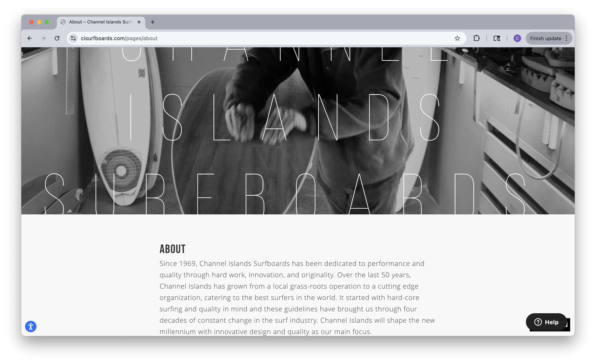
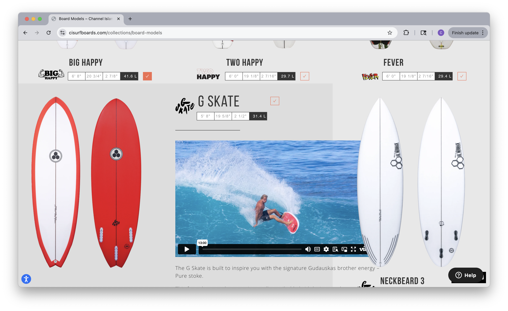
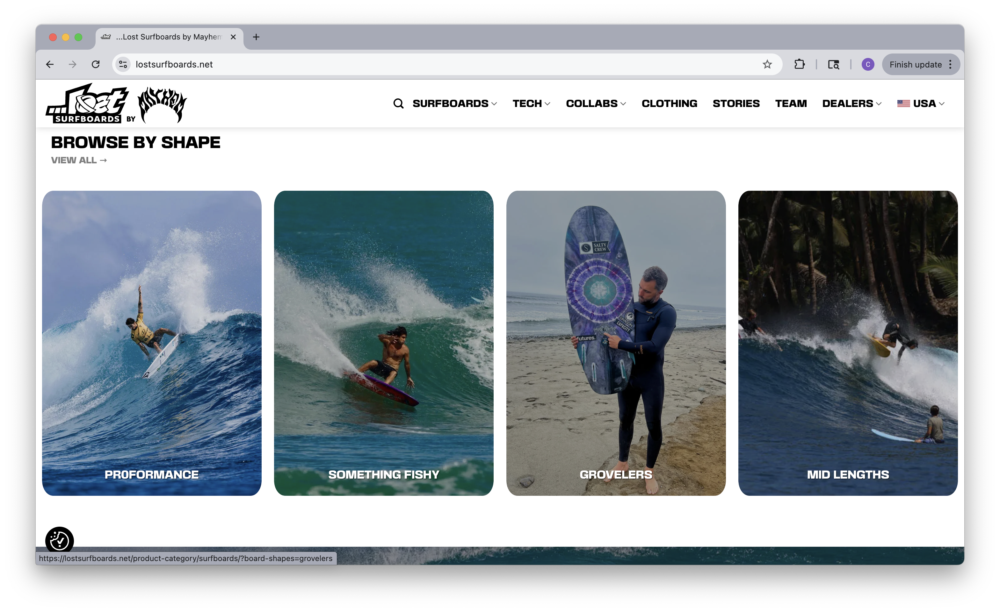
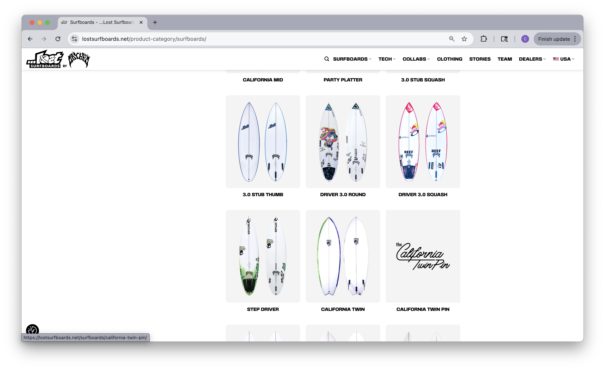
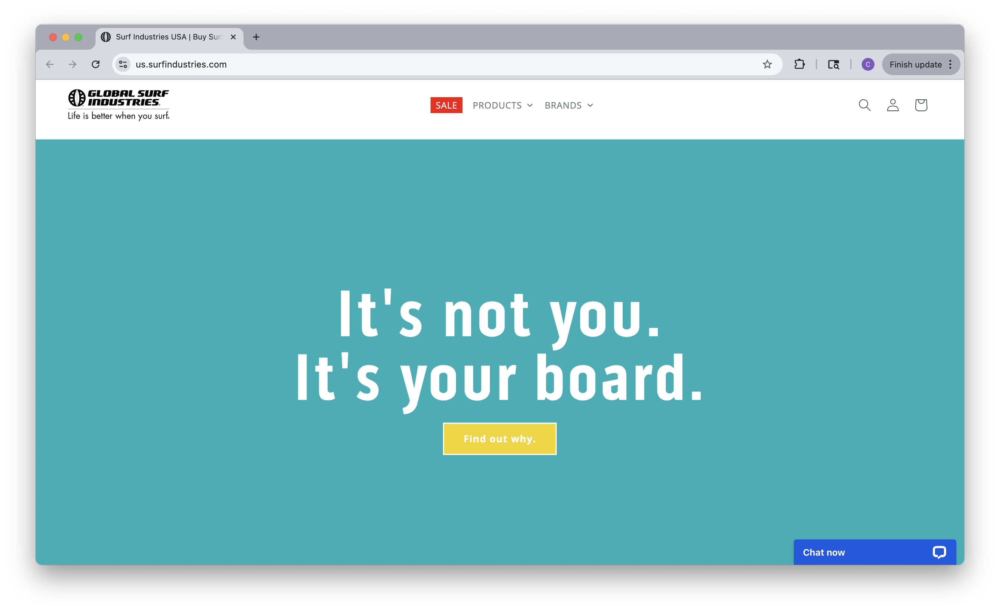
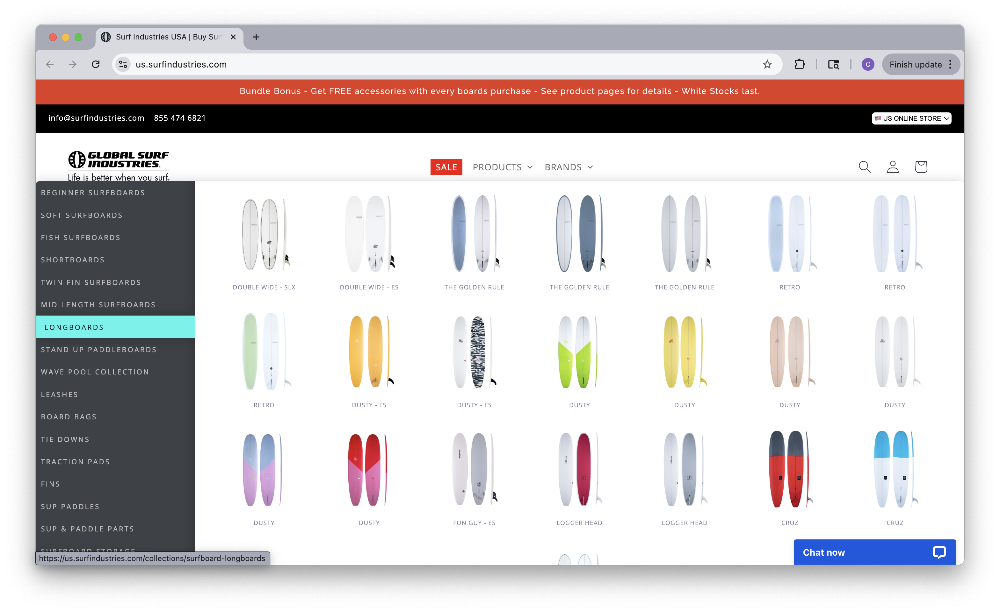

CHLO SURF
This is an actual company/brand that I hope to create one day, hopefully in the near future. This initial website I will create in this class will focus solely on selling cool surfboards.
The target audience is teens and young adults looking for the coolest surfboard out there, that is also perfect for them.
This website and surf shop are about the surf lifestyle, rather than just plain old business. As well, for people who aren't really a part of the surf community, like those who didn't grow up super close to the beach or are new wearers of flip flops, surfboard shopping can be daunting. So this website is focused on the cool vibes and making surfboard shopping easy.






CHLO SURF was born at the start of 2026, created by the one and only Chloe Herriott. Chloe grew up in Los Angeles, California, but not the postcard version steps from the sand. She grew up in the Valley, where the ocean is technically 20 minutes away… if you leave at the crack of dawn and traffic is magically on your side. Stay at the beach past 3 PM and that “quick drive” turns into a two-hour crawl through LA traffic.
Meanwhile, the best surf shops, the culture, and the lifestyle all live closer to the coast. For Valley kids, that distance is real. CHLO SURF was created to close that gap. It’s about bringing the surf lifestyle to the Valley, to the kids who don’t grow up with salt in the air but still feel pulled to the ocean. It’s about making that culture accessible, effortless, and part of everyday life, no matter your zip code.
Because you don’t have to live on the beach to live the surf lifestyle.
Picture of Studio City, Los Angeles
Your wave is waiting…
wave image
The Ripper Round. $600. The RIPPER, is now available with a round tail.The round tail gives The RIPPER more range in a wider variety of waves than the original squash tail. Reducing surface area in the last few inches of the tail lends more control, at higher speeds and allows more precise turns in tighter, powerful pockets. With only a minimal loss of lift and effectiveness in the smallest surf, the RIPPER End makes up for it, with increased effectiveness once the surf gets a bit more size or punch.
Pisces. $750. The PISCES: The evolution of the performance fish subspecies, where precision is paramount. An evolving design, focused on eliminating the stigma of arrested development in the post-modern fish genre. Embracing all that came before and bridging the gap forward. Turn tighter in the pocket, carve perpendicular on the face, fin-free control in the lip, and still skate freely across the flats.
Semi-Pro 12. $650. Originally released in 2012, the Semi-Pro 12 incorporates a wider forward (nose) outline and the wide point just a little behind center. The main purpose of this design change (relative to other performance boards) was to allow for more forward volume which translates to easier paddling and wave catching while still accommodating a short rail for tight arc.
Bonzer 5 Shelter. $880. The Shelter model is our contemporary Bonzer 5 shortboard. Its name was inspired by the 2001 film, Shelter by Chris Malloy and Moonshine Conspiracy. We provided a 6’2″ and a 6’4″ for the film. The boards were ridden by Taylor Knox, Donovan Frankenreiter, and a cast of visiting surfers. The Shelter is primarily a squash tail and can be custom ordered with a swallow, round pin, or thumb tail. It is a versatile board that works well in all conditions. When deciding on the size, go with your favorite dimensions, taking into consideration the conditions and type of waves you anticipate using the board for.
California Mid. $700. Spearheaded by MR and his core customers down in Australia, the ever popular California Twin series just got a bit more length. Mark made it back to California in Summer ’24. We developed and re-introduced many of his iconic and classic models, built a bunch of custom orders, discussed his line of boards…and the gracefully aging part of his demographic. During his time here, we were fortunate to get together and design this latest addition to the CA-Twin series… The California Mid.
Rad Ripper. $900. Starting with the Retro Ripper, I lowered the entry rocker a bit (for fast paddle, early entry, easy glide and quickness out the gate), and replaced the speed controlling round tail with a wide, planing squash tail. Lots of lift and surface area for small surf. As a child of ‘80’s surfing, I’ve always been enamored by the ease of use from that era’s performance short boards. The RAD RIPPER retains a noticeably healthy amount of tail rocker, cut through by an aggressive double concave, adding even more lift and squirt under the rear foot.
Psycho Killer. $750. The Psycho Killer is a psychotic spin off from the ever popular Quiver Killer. Featuring all the design aspects that made the Quiver Killer one of the most popular surfboards in the world for the last few years, it’s easy to catch waves and create speed. It loves tubes, and at faces, and is fully capable of performing full rail carves and nimble maneuvers when asked. This sort of wide ranging function is what makes the “Killer” Series a favorite for surfers from our top team to everyday Janes and Joes.
CI Log. $1,000. Staying true to the traditional longboard genre, the CI Log has no edge in the tail—which in part helps facilitate the board’s incredible hold and sense of control one will feel while blasting through sections on the nose. To offset the tail drag, boggy nature soft railed longboards are notorious for, Wayne added a unique low apex rail to provide more drive, sensitivity, and certainty through turns than a typical “log” design would offer.
111 Ventura Blvd, Studio City, California, 91604
Hours: Monday - Thursday: 12-5 Friday - Sunday: 10 - 5
Phone: (818)377-1111
CHLO SURF store front